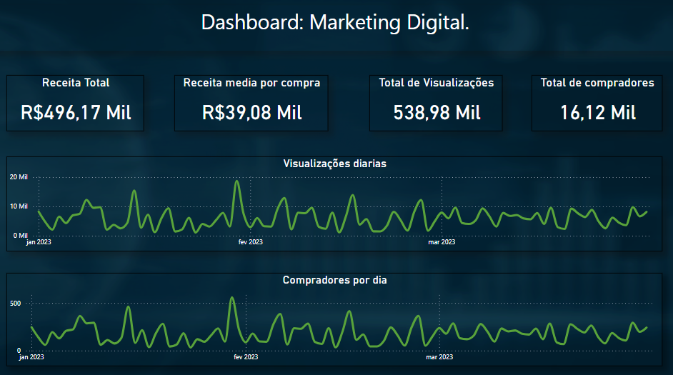
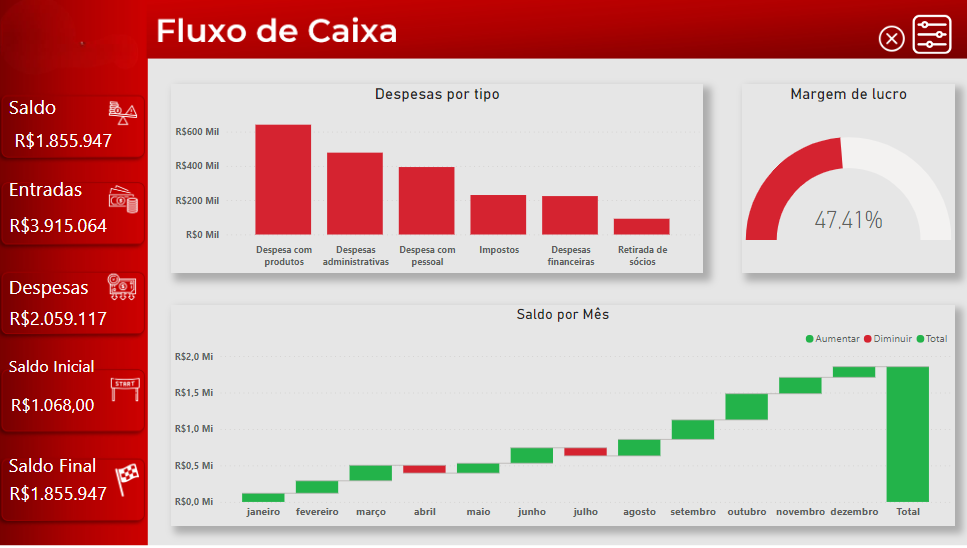
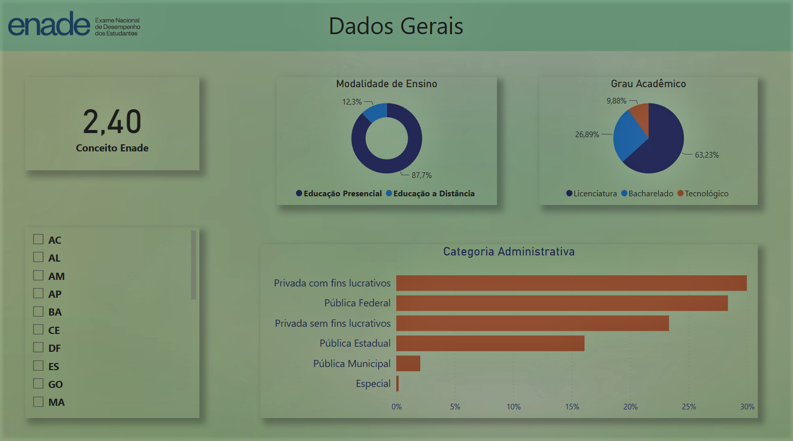

<link rel="stylesheet" href="./reset.css">
<link rel="stylesheet" href="./style.css">
<link rel="stylesheet" href="./Styles/headerProjetos.css">


<!-- ================= HEADER ==================== -->


    <header class="cabecalho">
        <nav class="cabecalho__menu">
            <a class="cabecalho__menu__link" href="./index.html">
                <c > </c>Pagina Inicial</a>
        </nav>
    </header>


    


<!-- ============ Analise Qualitativa =================== -->

<!-- <section  class="projetos_section"> 
    <div class="projetos__titulo"> 
    <p class="projetos__titulo B">Analise: Atendimento ao cliente</p> </div>

    <a class="projetos__imagem" href="https://app.powerbi.com/view?r=eyJrIjoiZjM0NWJmM2QtMTg3Yi00ODVjLWI5MzMtNGI1YTRmM2NiMjc1IiwidCI6ImFhOTA5YTA2LTU5Y2YtNGYzNi1iZmE1LTkxNGNlMjQwMTVkYiJ9" target="_blank"> 
          </a>

    <div class="projetos__descrição"> 
        <p class="projetos__descrição B"> Esta foi uma análise realizada para a empresa A&C, atuante no ramo de call center. Utilizando os dados disponibilizados
             e AUTORIZADOS pela mesma, utilizei a ferramenta "Microsoft Power BI" para realizar o tratamento, análise e interpretação dos dados relacionados à qualidade dos serviços
            prestados pelos seus colaboradores sob diversos aspectos. Clique e confira!
        </p>
    </div>
</section> -->


<!-- ============ Marketing Digital =================== -->

<section  class="projetos_section"> 

    <div class="projetos__titulo"> 
    <p class="projetos__titulo A">Marketing Digital</p></div>

    <a href="https://app.powerbi.com/view?r=eyJrIjoiNjllZTM4MWItOWQ5NS00YThiLTgwYTEtMjliNDkzZjMwNmExIiwidCI6ImFhOTA5YTA2LTU5Y2YtNGYzNi1iZmE1LTkxNGNlMjQwMTVkYiJ9" target="_blank"> 
         </a>
        
    <div class="projetos__descrição">
        <p class="projetos__descrição A">Temos aqui uma análise de uma empresa atuante no Marketing Digital, com o intuito de acompanhar os principais indicadores de desempenho. Para isso, abordei os fatores financeiros, como as receitas da empresa, relacionando-os com o engajamento nas redes sociais. Além disso, também analisei o perfil dos clientes envolvidos. Clique e Confira!</p>
    </div>
</section>


<!-- ============ Fluxo de caixa =================== -->

<section  class="projetos_section"> 
    <div class="projetos__titulo"> 
    <p class="projetos__titulo B">Fluxo de caixa</p> </div>

    <a class="projetos__imagem" href="https://app.powerbi.com/view?r=eyJrIjoiZTE2MjFjYzAtNGZlYy00OTI3LTkyZTMtYjA2NzU5YjI3ZDgyIiwidCI6ImFhOTA5YTA2LTU5Y2YtNGYzNi1iZmE1LTkxNGNlMjQwMTVkYiJ9" target="_blank"> 
          </a>

    <div class="projetos__descrição"> 
        <p class="projetos__descrição B">Esta foi uma análise realizada a partir de um conjunto de dados de uma empresa com o objetivo de apresentar informações sobre seu fluxo de caixa. Destaquei informações relacionadas ao saldo, despesas, lucros e outros detalhes relevantes.
        </p>
    </div>
</section>


<!-- =========== Ibovespa ====================== -->


<section  class="projetos_section"> 

    <div class="projetos__titulo"> 
    <p class="projetos__titulo A">IBovespa (2013-2022)</p></div>

    <a href="https://app.powerbi.com/view?r=eyJrIjoiODU1YjA0NjgtNDAyNy00ODIwLWI0NjQtNTJlOTY0OGVkMTZjIiwidCI6ImFhOTA5YTA2LTU5Y2YtNGYzNi1iZmE1LTkxNGNlMjQwMTVkYiJ9" target="_blank"> 
         </a>
        
    <div class="projetos__descrição">
        <p class="projetos__descrição A"> A seguinte análise trata do índice Bovespa ao longo da última década (2013-2022). 
            Os dados foram obtidos por meio do site "Infomoney". Nesta análise, encontram-se informações e análises gerais sobre
            a década, bem como dados específicos sobre cada ano. Incluem-se dados sobre volatilidade, valores máximos e mínimos 
            durante o período, volume financeiro e outras análises relevantes.</p>
    </div>
</section>


<!-- ============ Fluxo de caixa =================== -->

<section  class="projetos_section"> 
    <div class="projetos__titulo"> 
    <p class="projetos__titulo B">Enade 2021</p> </div>

    <a class="projetos__imagem" href="https://app.powerbi.com/view?r=eyJrIjoiYzViODU5ZjctN2ZiYS00MWQ4LWIwNWEtNjhmMTIyMmEyY2ZjIiwidCI6ImFhOTA5YTA2LTU5Y2YtNGYzNi1iZmE1LTkxNGNlMjQwMTVkYiJ9" target="_blank"> 
          </a>

    <div class="projetos__descrição"> 
        <p class="projetos__descrição B">Neste projeto, realizei uma análise a respeito do Enade 2021, os quais são autênticos e foram fornecidos pelo Ministério da Educação. 
            Nessa análise, me aprofundei em cada informação disponível, examinando tanto os dados de forma abrangente quanto sob a perspectiva de categorias como administrativa,
            modalidade de ensino, grau acadêmico, entre outros.
        </p>
    </div>
</section>


